Modèle « Éditorial » : les quatre options, en vrais rendus
Chaque ligne montre le haut de la page du CV avec un nom différent. Les images viennent du vrai rendu de l'application. Le rond bleu de la dernière ligne est une photo d'essai. Rien n'est codé.
Les quatre options, en une phrase
- C, aujourd'hui : on ne change rien.
- A : le nom rapetisse jusqu'à tenir sur sa ligne. Le dessin reste identique.
- B : le CV passe en disposition « Empilée » (nom petit en haut, titre pleine largeur). Le grand nom coloré disparaît.
- D : la zone du nom s'élargit, le nom rapetisse un peu, et l'« Empilée » reste en filet de sécurité.
1. Nom court : « Camille MARTIN »
Aucune option ne doit rien changer ici. C'est la signature du modèle (A et D sont identiques à aujourd'hui). B est montrée seulement pour le contraste.
 C : aujourd'huiNom 46 px, en-tête 21,6 % de la page
C : aujourd'huiNom 46 px, en-tête 21,6 % de la page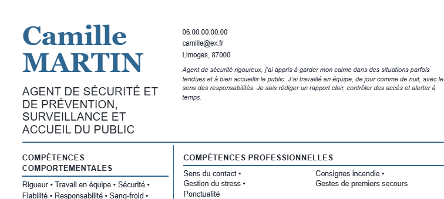
A : nom rapetissé si besoinIdentique : 46 px, 21,6 %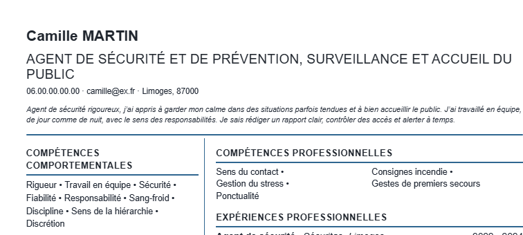
B : Empilée (montrée pour contraste)En-tête 17,3 % : le grand nom a disparu D : par paliersIdentique : 46 px, 21,6 %
D : par paliersIdentique : 46 px, 21,6 %2. Nom moyen : « Marie-Hélène DUPONT-MARTIN »
Déjà acceptable aujourd'hui : le nom passe à la ligne aux tirets, aucun mot n'est coupé. A et D ne changent rien, ce qui est voulu.
 C : aujourd'huiNom 46 px, en-tête 29,8 %
C : aujourd'huiNom 46 px, en-tête 29,8 %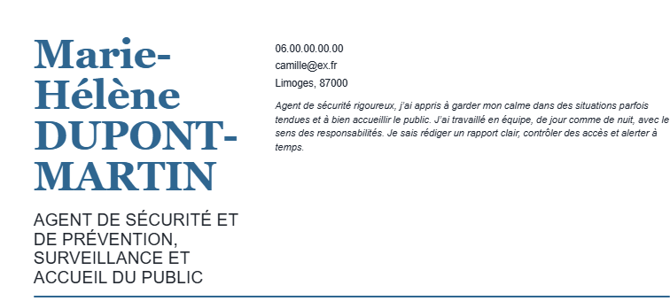
AIdentique : 46 px, 29,8 %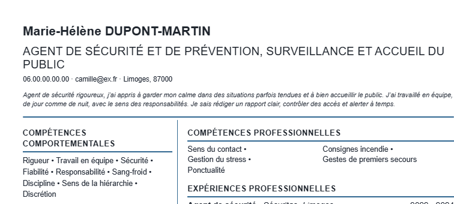
B : EmpiléeEn-tête 17,3 % (12 points de page gagnés) DIdentique : 46 px, 29,8 %
DIdentique : 46 px, 29,8 %3. Nom long : « Marie-Hélène DUBOIS-VANDENBROUCKE »
Le cas qui pose problème : aujourd'hui, le mot est coupé en pleine lettre.
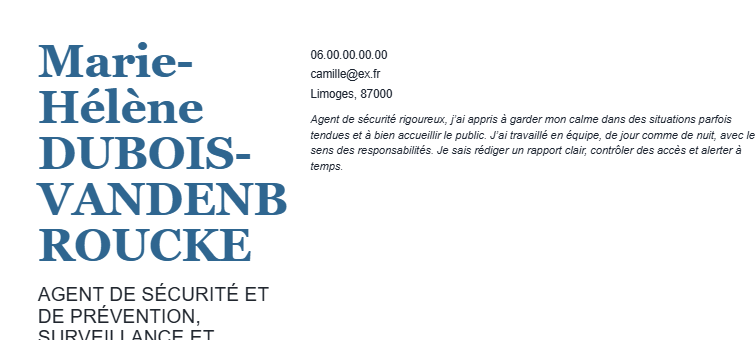
C : aujourd'huiMot coupé en pleine lettre, en-tête 33,9 %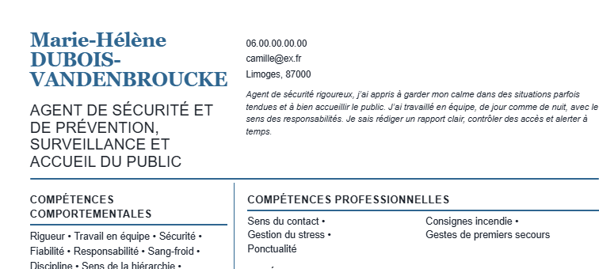
A : nom rapetisséNom 25 px, en-tête 20,1 %. Tout reste aligné, mais le nom est petit.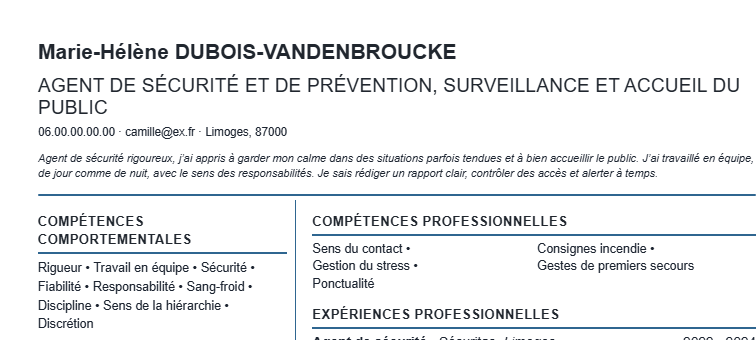
B : EmpiléeEn-tête 17,3 %. Très compact, mais autre allure.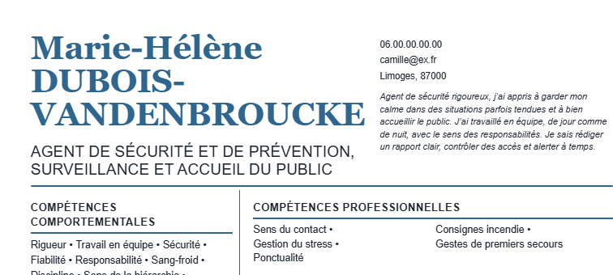
D : par paliersNom 41 px, en-tête 20,4 %. Le nom garde sa présence ; coordonnées décalées vers la droite.4. Nom long avec photo
Cas le plus chargé : la photo prend de la place au-dessus du nom.
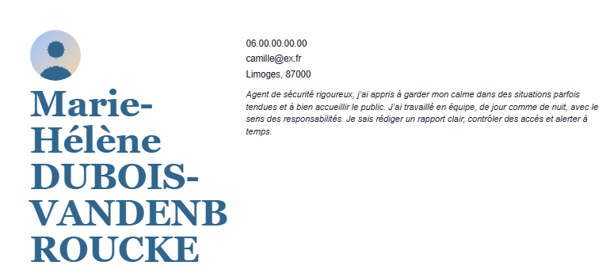
C : aujourd'huiEn-tête 40,1 % de la page (trop)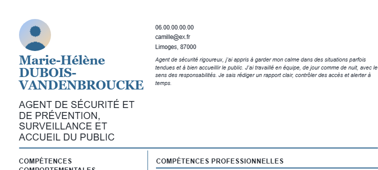
ANom 25 px, en-tête 26,3 %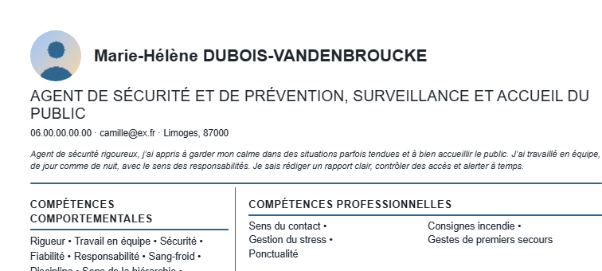
B : EmpiléeEn-tête 20,4 %. La plus compacte.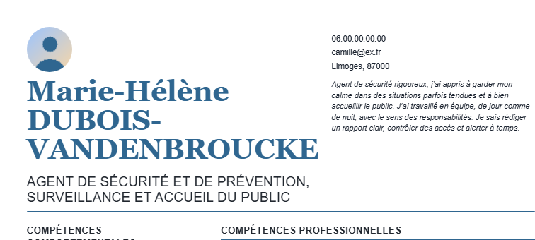
DNom 41 px, en-tête 26,7 %Tableau des mesures
| Cas | C (aujourd'hui) | A | B | D |
|---|---|---|---|---|
| Nom court | 46 px, 21,6 % | 46 px, 21,6 % | 17,3 % | 46 px, 21,6 % |
| Nom moyen | 46 px, 29,8 % | 46 px, 29,8 % | 17,3 % | 46 px, 29,8 % |
| Nom long | mot coupé, 33,9 % | 25 px, 20,1 % | 17,3 % | 41 px, 20,4 % |
| Nom long et photo | 40,1 % | 25 px, 26,3 % | 20,4 % | 41 px, 26,7 % |
Vos trois questions
Perds-je quelque chose avec D par rapport à A ? Oui, une seule chose : dans l'en-tête, la colonne des coordonnées n'est plus alignée avec la colonne du corps du CV (comparez les lignes 3 et 4). En échange, le nom reste grand (41 px au lieu de 25 px). Pour les noms courts et moyens, A et D donnent exactement le même résultat qu'aujourd'hui.
Garder A et passer à un mélange seulement quand A ne suffit pas ? Oui, c'est possible et c'est même l'option la plus prudente : le nom rapetisse d'abord, jusqu'à un plancher (par exemple 40 px, soit 15 % de moins), en gardant l'alignement. Si le plus long mot ne tient toujours pas, on élargit la zone du nom (D), puis en dernier recours l'« Empilée » (B). Résultat : les noms un peu longs gardent l'alignement parfait, les noms très longs profitent de D. Je ne l'ai pas encore mesuré, c'est la seule différence avec ce que vous voyez ici.
Une situation où B serait la meilleure sans être exploitée ? Oui : le nom long avec photo (ligne 4). B donne 20,4 % de la page contre 26 à 27 % pour A et D, soit environ 6 points gagnés. Elle n'est pas utilisée parce qu'elle change l'allure du CV (le grand nom coloré disparaît) et que 26,7 % reste sous notre seuil d'alerte de 30 %. Je vous conseille de ne pas l'imposer : un CV « Éditorial » doit ressembler à « Éditorial ». B reste le filet de sécurité si D ne suffit pas (un nom encore plus long, un titre très long, etc.).